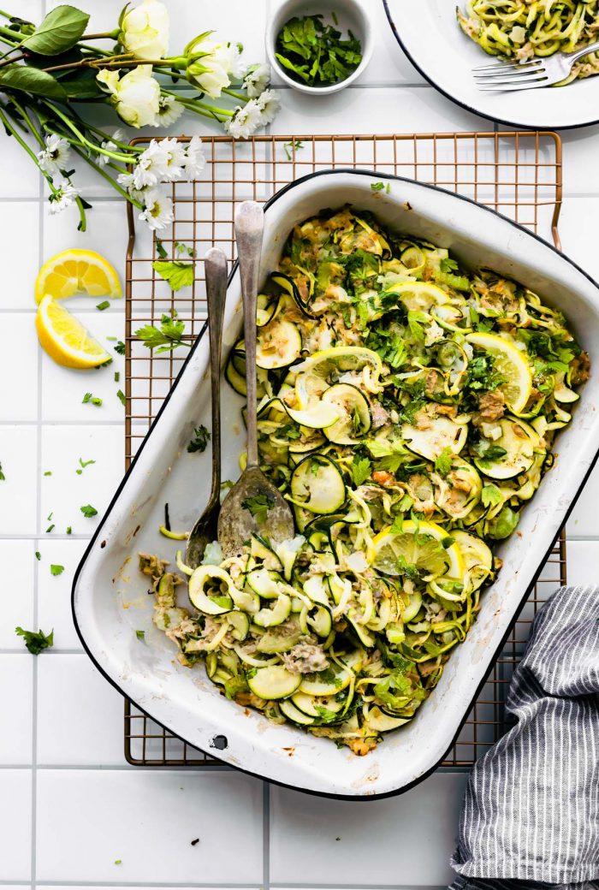

Green Chile Tuna Zucchini Casserole
This keto tuna casserole has zucchini noodles and green chiles for a delicious paleo, low-carb, high protein meal. Make this recipe – it’s a great way to use your spiralizer and boost your nutrition!
this tuna zoodle casserole is a great recipe for using whatever pantry items and veggies you have on hand. Like canned tuna and zucchini. This dish IS EPIC. Just a few simple ingredients is all you need!
INGREDIENTS
- Tuna fish
- Green chiles
- Zucchini
- Coconut flour or Tapioca flour
- Dairy free milk
- Paleo mayo – To be paleo-compliant, the mayo you use must be made with a paleo-approved oil, such as avocado, coconut or olive oil. Also, check the ingredient label to be sure that the mayo you use is 100 percent REAL, made without any partially hydrogenated fats. Even better, considering making your own – it’s pretty easy if you have a high speed blender or immersion blender!
How to make paleo mayo
Ingredients
- 1 cup paleo-compliant oil (avocado, coconut, olive, etc.), divided
- 2 large egg yolks, room temperature
- 1 teaspoon Dijon mustard, room temperature
- 1/8 teaspoon fine sea salt
- 2 tablespoons lemon juice, room temperature
Instructions
- Using your immersion blender or high speed blender, mix half of the oil, both egg yolks, dijon mustard, and sea salt in your blender.
- While the blender is running, very slowly drizzle in the remaining 1/2 cup of oil. Don’t add it all in at once! You need to do this slowly over the course of a couple of minutes so that the oil and eggs are “forced” together in an emulsion.
- Continue blending for one additional minute.
- Stir in lemon juice.
- Store in a covered glass container in the refrigerator for up to one week.

STEP BY STEP INSTRUCTIONS
- Wash and clean your veggies and preheat your oven. Also, grease a 2-quart casserole dish. Mine is 9 x 13, but there are oval ones as well.
- Ribbon cut or spiralize your zucchini into noodles.
- In another bowl, combine the tuna fish, mayo, green chiles, and spices.
- Oil a medium skillet. Add in your onion and celery and seasoning of choice. Cook for about 6 minutes over medium heat, until the onion is soft and translucent.
- Next add your flour (tapioca flour & coconut flour both work) and milk to the skillet. Stir together with the celery and onion mixture until no longer clumpy. This will act as a thickener.
- Add and cook the zoodles
- Add the tuna mixture to the large bowl with the zucchini mixture and toss everything together.
- Bake for 15 -20 minutes or until edges are brown. If the casserole does not brown after 15 minutes, leave in an extra 5 -10 or until crispy edges. If you want to make the top really crispy, place the keto tuna casserole under the broiler for a couple of minutes. Watch it closely to prevent it from burning.